Hall of Achievements🏆✨
A collection of milestones, victories, and memories gathered throughout my journey.˙✧˖°🎓 ༘⋆｡ ˚
Academic Pursuits🧠
A collection of intellectual milestones, competitions, and moments of curiosity.
🏆WWGC 2025 BY WWF
2025
Secured Third Position in the National Finale of Wild Wisdom Global Challeneg by World Wildlife Fund,
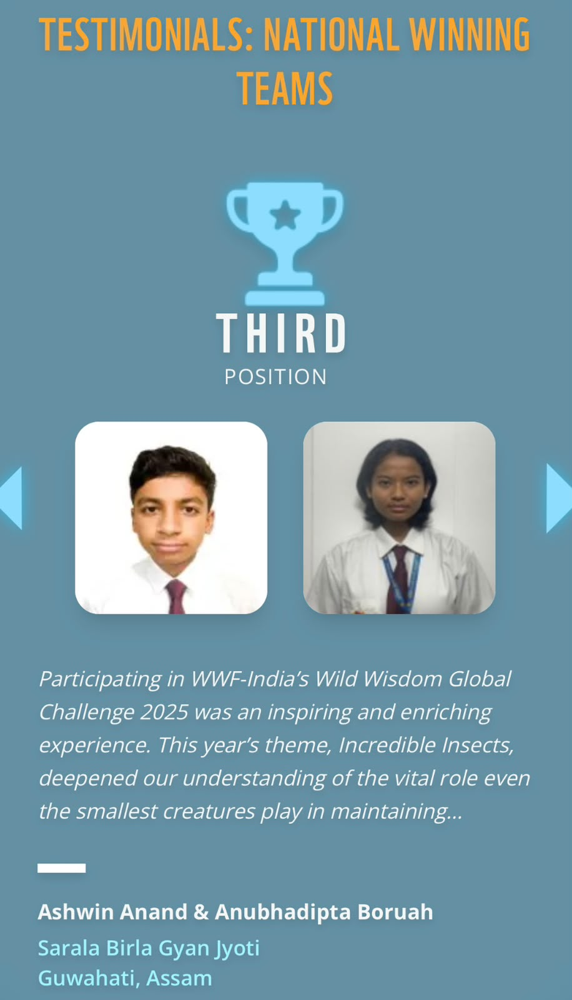
A proud moment of recognition in the field of wildlife conservation and awareness.
🏆2 time NorthEast 1st rank holder in IEO
2023, 2025
🏃 Athletic Pursuits
Every competition was more than a game, it was a lesson in perseverance, teamwork, and resilience.
🏆 Inter-School Basketball Championship
2025
Secured Second place in the Inter-School Basketball Championship.
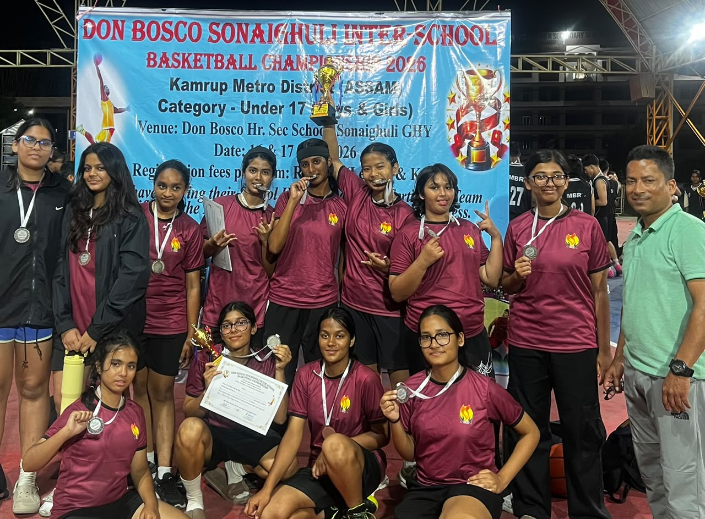
Victory belongs to those who refuse to stop running.
🏆 Inter-School Badminton Championship
2024, 2026
Secured Second place in the Inter-School Badminton Championship in Categories of Under 15 and Under 17.
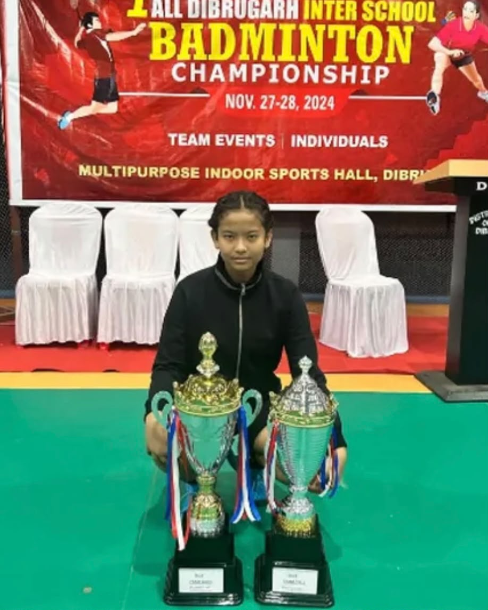
Excellence isn't a single victory, it's the ability to achieve it again.
Secured Second place in Inter-School Badmiton Championship in categories of Under 17, Singles and Doubles.
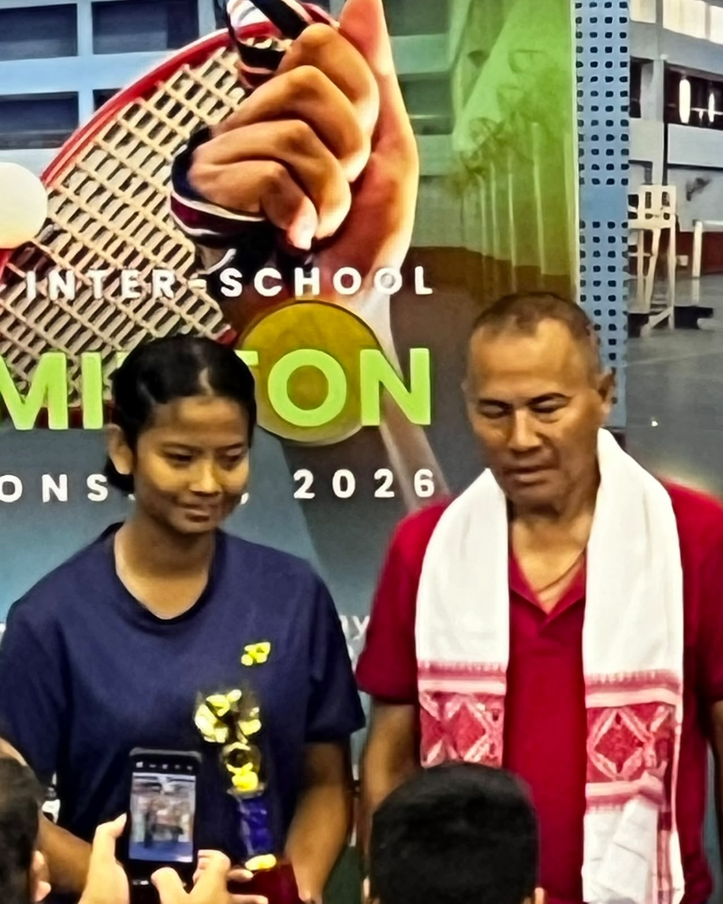
Every challenge is an opportunity to grow stronger.
🎨 Creative Gallery
A collection of artistic endeavors, competitions, and moments of creative expression.
🏆 Inter-School Photography Competition
2026
Secured First place in the Inter-School Photography Competition.
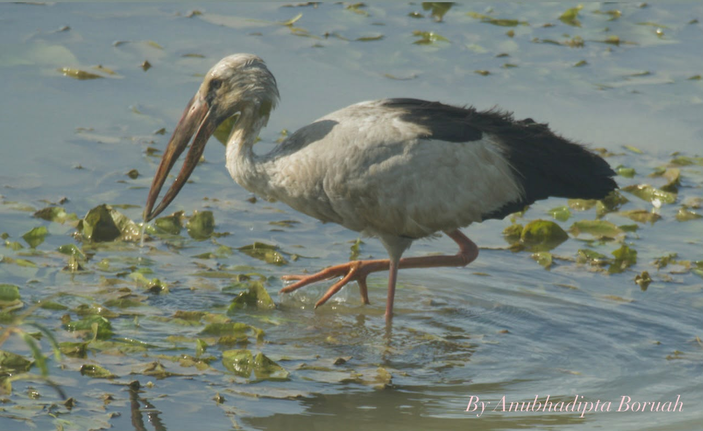
Capturing moments, one click at a time.
🏆 Inter-School Art Competition
2026
Secured Third place in the Inter-School Art Competition.
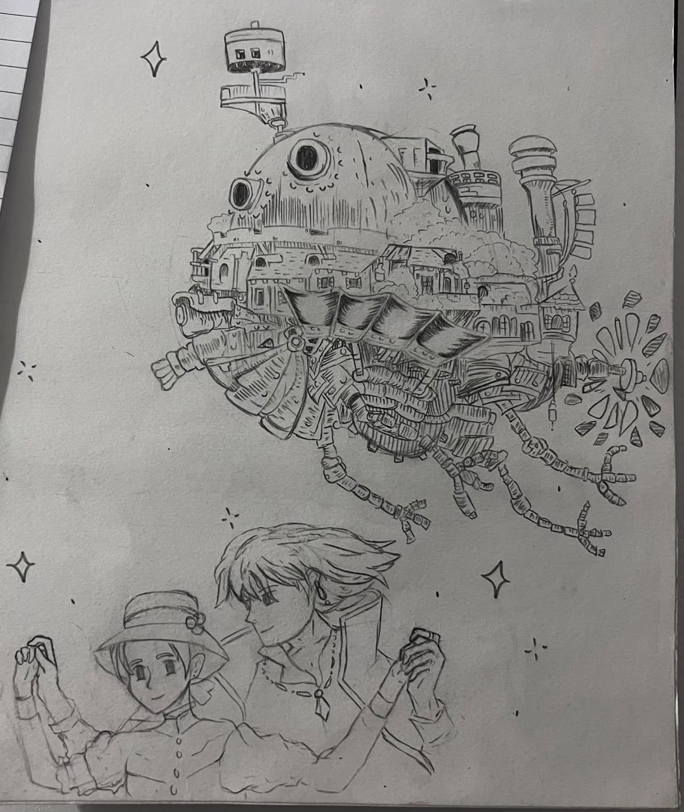
Every stroke tells a story, every color evokes an emotion.
🏆 Inter-School Creative Writing Competition
2025
Secured Second place in the Inter-School Creative Writing Competition.
Words have the power to inspire, to heal, and to transform.
🏆 International Music Competition
2025
Secured First place Internationally in a Music Competition in the singing category.
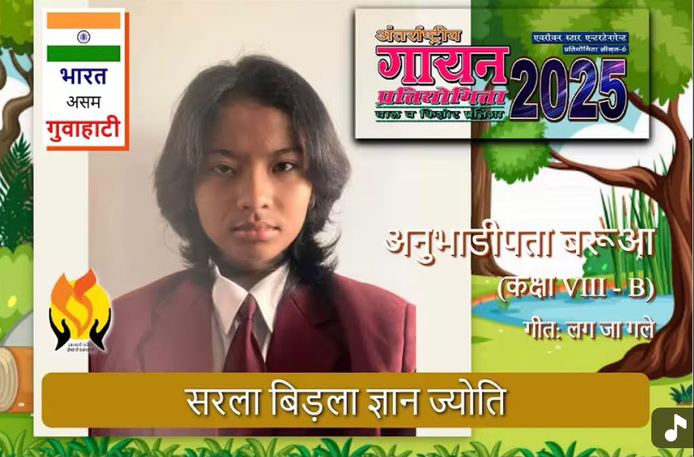
Music is the universal language of mankind.
🏆 Inter-School Ad Mad Competition
2025
Secured Second place in the Inter-School Ad Mad Competition.
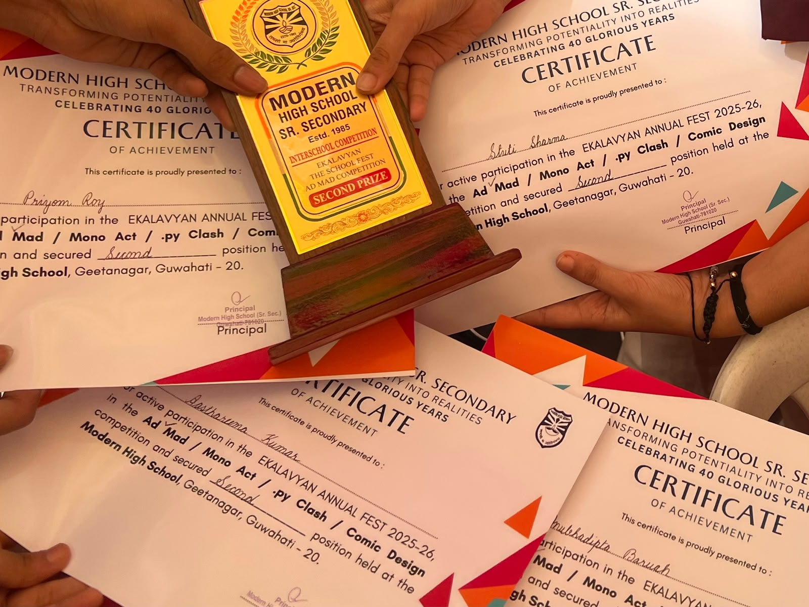
Creativity is intelligence having fun.
🏆 Inter-School Debate Competition
2026
Secured First place in the Inter-School Debate Competition.
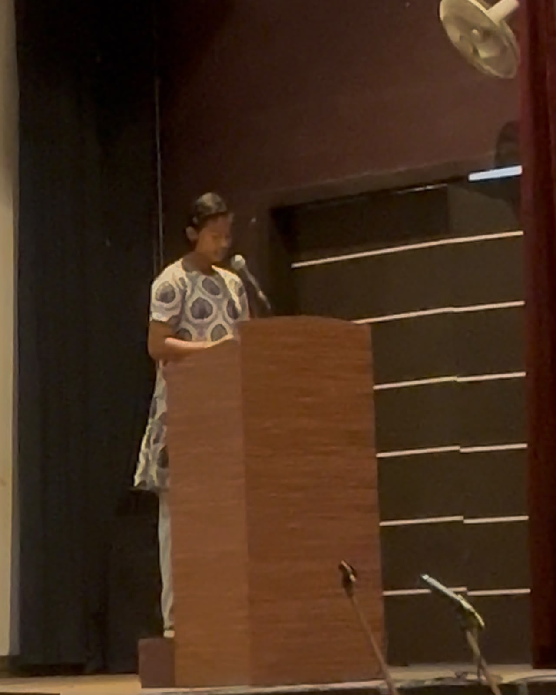
The art of debate is the art of persuasion, and the power of words.
🏆 Inter-School Dance Competition
2025
Secured Second place in the Inter-School Dance Competition.
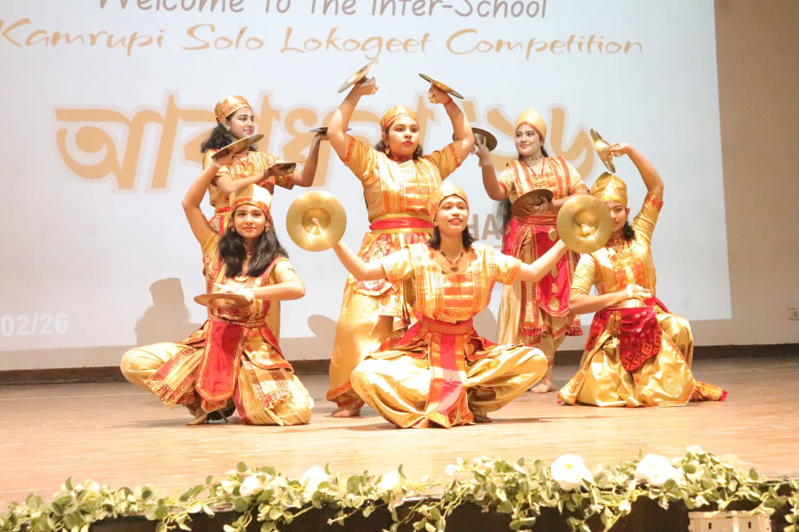
Dance is the hidden language of the soul.
🌿 Nature & Exploration
Beyond classrooms and competitions lies a lifelong fascination with the natural world. This gallery celebrates experiences in wildlife, biodiversity, conservation, and citizen science.
🦜 Wild Wisdom Global Challenge
2025
Secured Third Position in the National Finale of the Wild Wisdom Global Challenge, organised by WWF-India, demonstrating knowledge of wildlife, biodiversity, and conservation.
"Every species has a story, and every story deserves to be understood."
📸 Monsoon Photo & Wildlife Walk
2026
Participated in a guided Monsoon Photo & Wildlife Walk, two times throughout the year, exploring local biodiversity while documenting nature through photography.
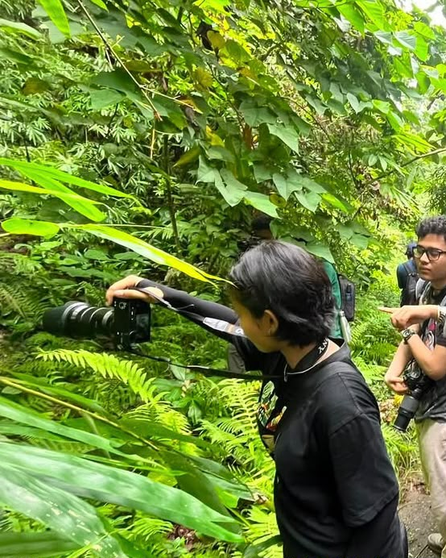
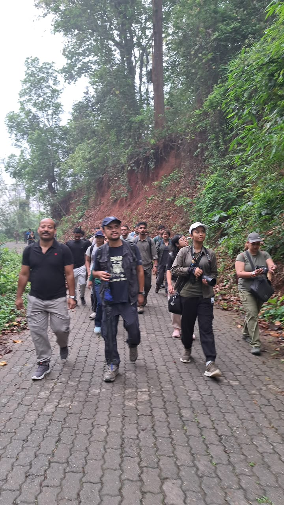
"Sometimes the best discoveries happen behind a camera lens."
🔬 Citizen Science Contributor
Ongoing
Actively contribute biodiversity observations to citizen science initiatives, helping document species distributions and supporting ecological research.
"Observation is the first step toward conservation."